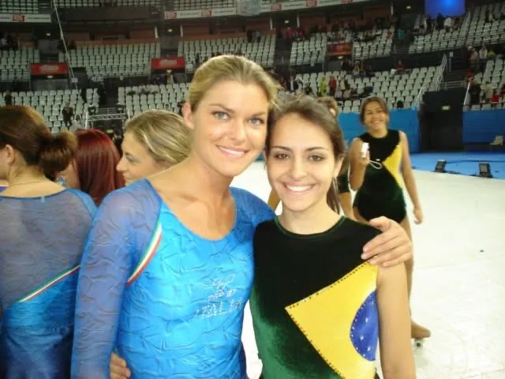
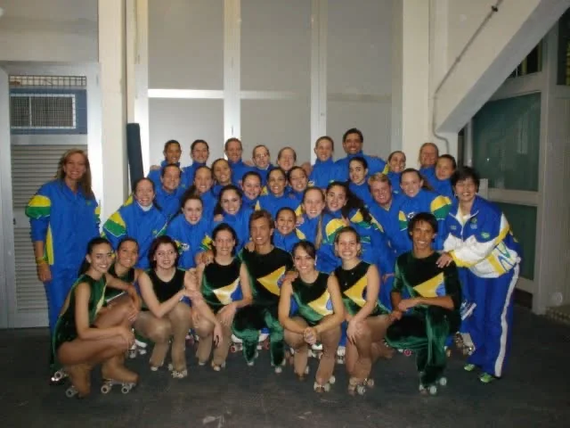
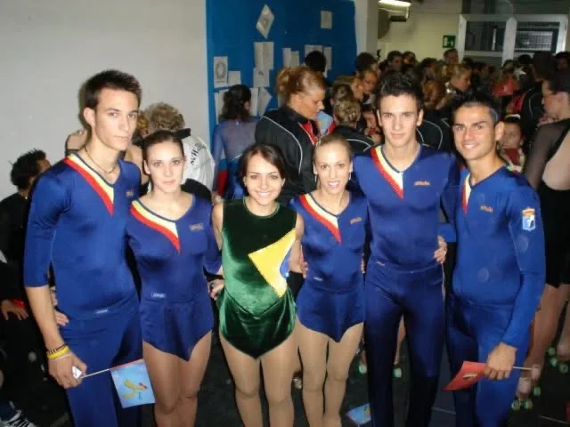
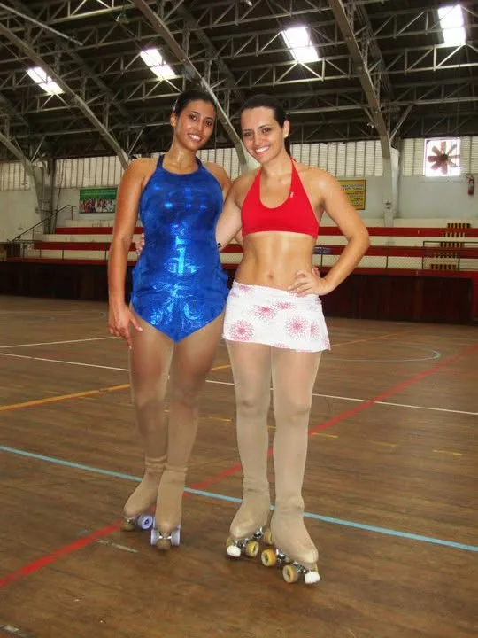
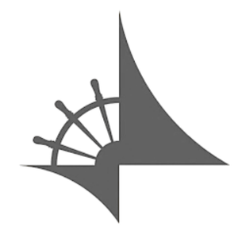
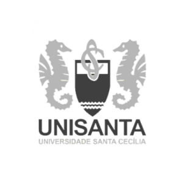

Um pocket workshop de treinamento mental para a equipe de badminton da Hípica, construído com a comissão técnica e conduzido por Mayra Ramos.
Preparada paraSociedade Hípica de CampinasBadminton · Alto rendimento · Atletas de 14 a 45 anos
17 de novembro de 2026Instituto Atleta Campeão
Diretor da modalidade: Filipe Lima · Técnicos: Luis Fernando Martin e Gustavo Aquino
Em 30 segundos
Um encontro. Um foco. Uma prática para levar ao treino.
Os técnicos escolhem o tema
Um briefing de 5 minutos define a prioridade da equipe.
Mayra conduz com os atletas
Conversa breve, dinâmica coletiva e uma ferramenta prática.
Sem cachê, em troca do registro
A atividade é filmada e vira conteúdo nos canais do Atleta Campeão.
Por que a HípicaUma equipe que já está no pódio
3 ouros e 1 prata no Nacional MasterFlorianópolis, nov. 2026: Rodrigo Bongers, Fernanda Kumasaka e Filipe Lima no pódio
Vice-campeã nacional por equipes mistasAgosto de 2026
Título e 4 medalhas na I Etapa NacionalCuritiba, fevereiro de 2026
Prata no Pan-Americano de ParabadmintonFrederico Chanoft, novembro de 2025
Conquistas divulgadas em hipica.com.br
Técnica e preparo a equipe já tem. Num esporte decidido ponto a ponto, o que acontece na cabeça entre um rali e outro também se treina.
FL
Filipe LimaDiretor da modalidade
LF
Luis Fernando MartinTécnico · ex-atleta da Seleção
GA
Gustavo AquinoTécnico · ex-atleta da Seleção
ATLETA CAMPEÃO × SOCIEDADE HÍPICA DE CAMPINAS02 / 06
Encontro com atletas no Corinthians
O projeto
O treinamento mental onde o atleta está.
O Atleta Campeão na Prática leva o treinamento mental para o clube, a quadra e a rotina de treino, e registra a aplicação de uma ferramenta real.
Na Hípica, o encontro parte do que os técnicos já observam e soma ao trabalho que eles conduzem.
Como funciona
01
Ouvir
Os técnicos indicam uma prioridade e compartilham situações dos treinos e das competições.
02
Praticar
Mayra conduz uma conversa breve, uma dinâmica coletiva e uma ferramenta ligada ao desafio escolhido.
03
Levar para o treino
Os atletas saem com uma prática simples para usar na rotina, em sintonia com as orientações da equipe.
Formato sugerido: encontro presencial de 45 a 60 minutos. Data, duração e dinâmica seguem a rotina do clube.
Temas · os técnicos escolhem o foco
01
Foco e concentração
Reconhecer distrações e voltar a atenção para o próximo ponto.
Na quadra: o intervalo entre um rali e outro, quando a cabeça ainda está no ponto perdido.
02
Confiança e resposta aos erros
Lidar com o erro e se preparar com confiança para a próxima ação.
Na quadra: errar uma devolução fácil e sacar o ponto seguinte sem medo.
03
Pressão competitiva
Experimentar recursos para lidar com a ansiedade e se preparar para competir.
Na quadra: o 20 a 20 do set decisivo, a final de etapa, o jogo contra o favorito.
04
Controle emocional
Reconhecer emoções e escolher respostas mais úteis diante da frustração.
Na quadra: a irritação com a arbitragem ou com o parceiro de dupla que contamina o jogo.
ATLETA CAMPEÃO × SOCIEDADE HÍPICA DE CAMPINAS03 / 06
A parceria
O que cada lado coloca na mesa.
A Hípica recebe
Pocket workshop de treinamento mental conduzido por Mayra Ramos.
Conteúdo adaptado ao desafio que a comissão técnica escolher.
Uma ferramenta prática para os atletas usarem na rotina de treino.
Visibilidade do trabalho da equipe nos canais do Atleta Campeão, com o nome do clube quando autorizado.
Sem cobrança de cachê
A contrapartida
Permissão para filmar a atividade no clube.
Publicação dos registros autorizados nos canais do Atleta Campeão, incluindo YouTube e redes sociais.
Alinhamento prévio de espaços, rotina de gravação e uso do nome e da marca do clube.
Cuidados com a filmagem
Imagem e voz usadas somente com autorização de cada participante.
Menores de idade: autorização dos responsáveis e concordância do atleta.
Quem preferir não aparecer participa sem ser identificado.
O conteúdo tem foco na experiência coletiva e nos aprendizados.
Os técnicos definem a prioridade. Mayra conduz uma experiência prática que soma ao trabalho que eles já fazem.
Atleta Campeão na Prática · um encontro construído com a comissão técnica
ATLETA CAMPEÃO × SOCIEDADE HÍPICA DE CAMPINAS04 / 06
Sobre a Mayra
20 anos de Seleção antes de treinar a mente de atletas.
Mayra Ramos competiu pela Seleção Brasileira de Patinação Artística por duas décadas. Conhece por dentro o alto rendimento, a cobrança e o momento de entrar para competir.
20 anosna Seleção
30 mil+atletas, pais e treinadores
15+países com atletas

Mundial, com a Itália

Delegação brasileira

Bastidores

Dia de treino
Com a Seleção
Na pista do Mundial
Atleta
20 anos na Seleção Brasileira de Patinação Artística
Campeã pan-americana e sul-americana de duplas
Vice-campeã mundial por equipes
Bronze no Pan de Santo Domingo 2003
Eleita 2 vezes pelo COB a melhor da patinação
Comunicação
Do pódio para a cobertura do esporte
Repórter na TV Tribuna (afiliada Globo) e comentarista dos Jogos de Inverno pela Record.
Formação
Especialização nos Estados Unidos
Coaching, psicologia esportiva, neurociência esportiva e hipnoterapia clínica.
2016 · 2017
Funda o Atleta Campeão nos EUA e traz o método ao Brasil
2018
Reconhecimento do COB e convite ao Prêmio Brasil Olímpico
Hoje
Referência em treinamento mental esportivo, com 400 mil seguidores
Clubes e equipes que já receberam o Atleta Campeão


ATLETA CAMPEÃO × SOCIEDADE HÍPICA DE CAMPINAS05 / 06
Próximos passos
1. BriefingOs técnicos respondem as perguntas abaixo ou online.
2. FocoMayra prepara a dinâmica a partir das respostas.
3. OrganizaçãoGrupo, data, espaço e autorizações de gravação.
4. EncontroWorkshop, filmagem e a prática para o treino.
Prefere responder pelo celular?5 minutos, com o tema já em opções para marcar.